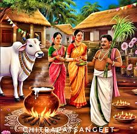
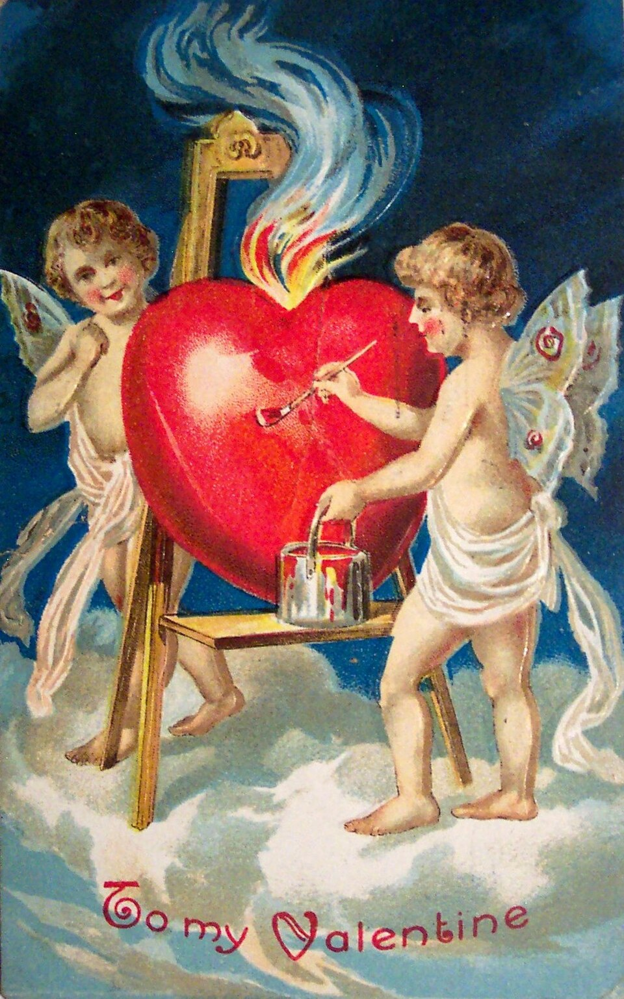
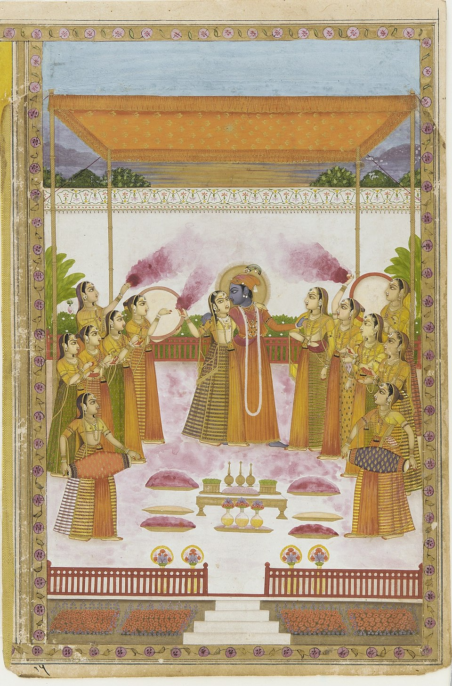
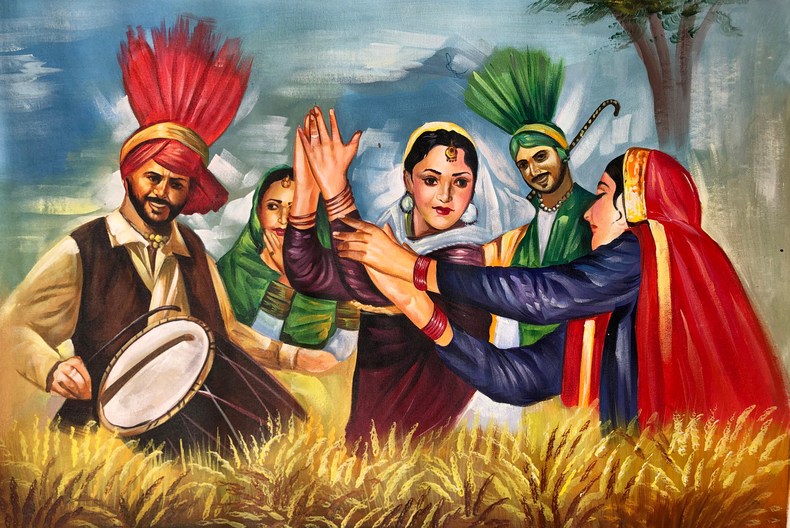
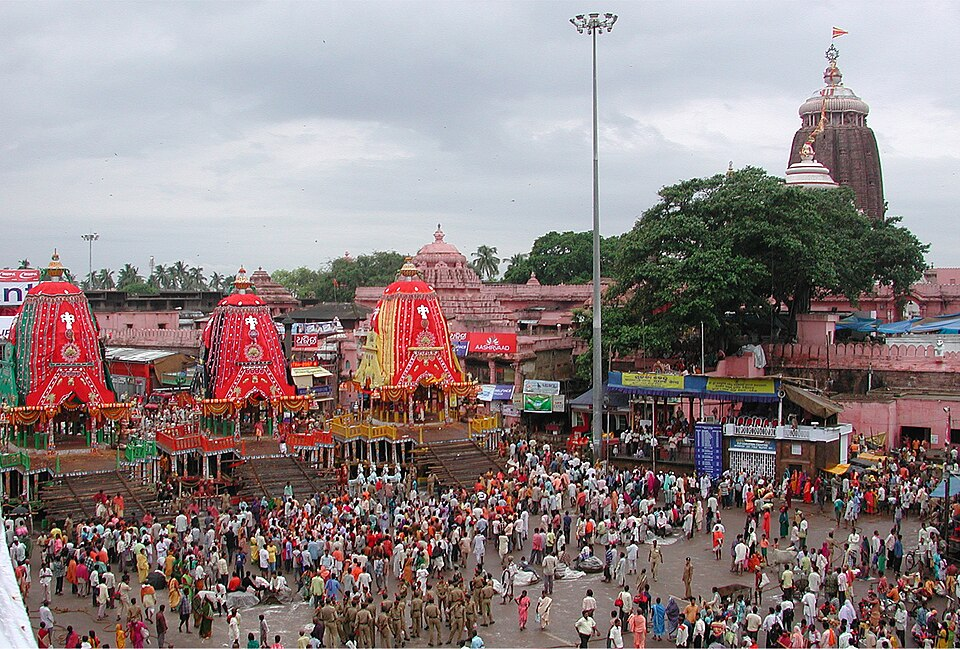
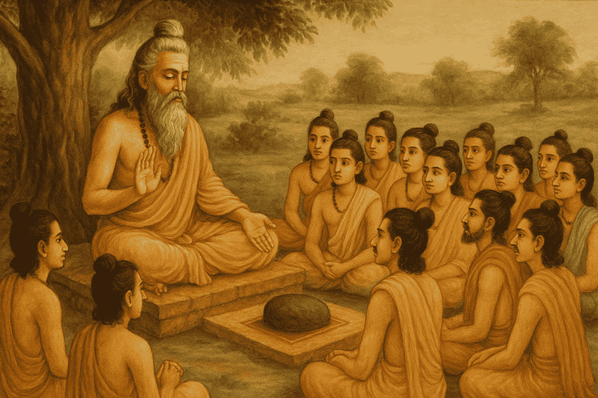
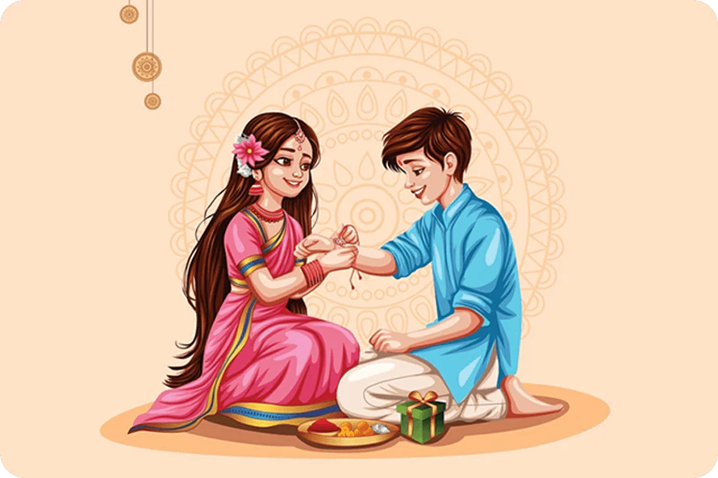
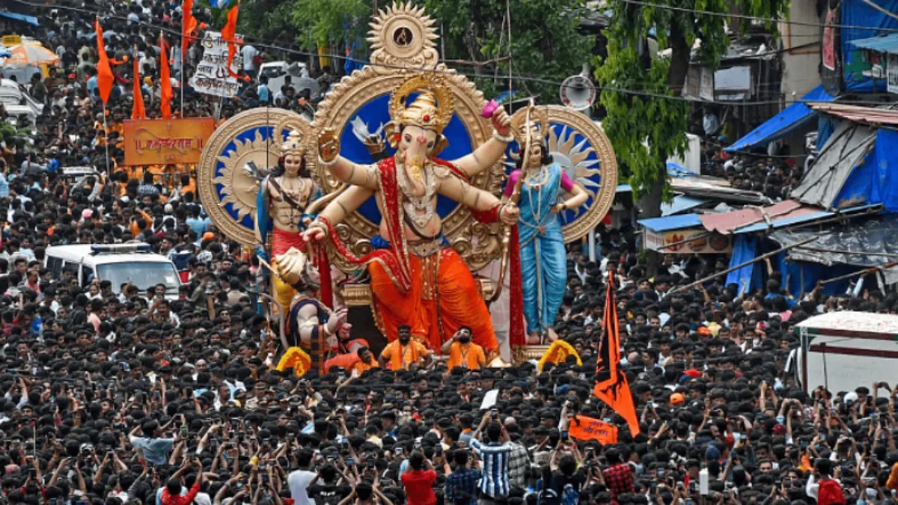
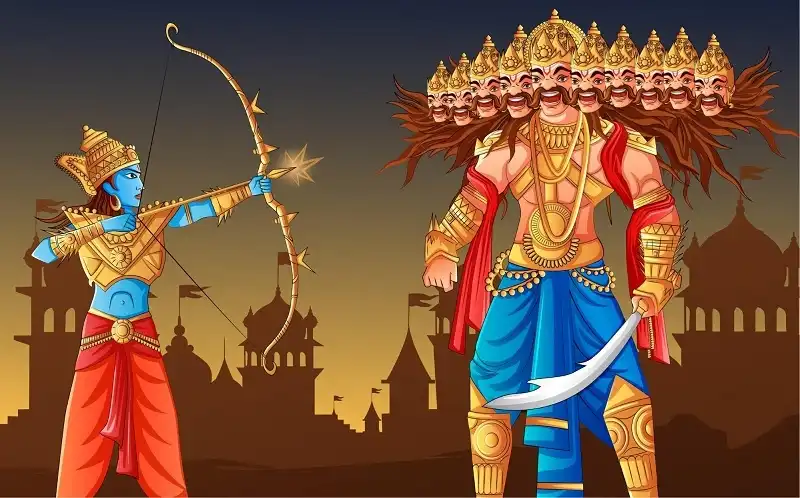

FESTIVALS INFO
Jan Festivals
Pongal
Pongal is a traditional harvest festival celebrated predominantly in the Indian state of Tamil Nadu and among Tamil communities across the world. Observed in mid-January, usually from the 14th to 17th, Pongal marks the beginning of the Tamil month "Thai" and coincides with the sun’s transition into the zodiac sign of Capricorn, signaling the end of winter and the start of the harvest season. The festival is named after the ceremonial dish "Pongal," which is made by boiling rice with fresh milk and jaggery in new clay pots, allowing it to overflow—a symbolic gesture of abundance and prosperity.
The celebration spans four days, each with its own significance. The first day, Bhogi, is dedicated to discarding old belongings and celebrating new possessions. People clean their homes, light bonfires, and burn unwanted items, symbolizing a fresh start. The second day, Thai Pongal, is the main event, where people offer thanks to the Sun God for a bountiful harvest. Homes are decorated with colorful kolam (rangoli), and traditional clothes are worn during family gatherings and rituals. The third day, Mattu Pongal, honors cattle like cows and bulls that play a crucial role in agriculture. They are bathed, adorned with garlands, and worshipped. The final day, Kaanum Pongal, is about socializing and spending time with family and friends outdoors.
Pongal is not just an agricultural celebration but also a deeply spiritual and cultural festival that emphasizes gratitude, prosperity, and community. It reflects Tamil people's respect for nature and their agrarian roots.

Feb FESTIVALS
Valentines Day
Valentine’s Day, celebrated annually on February 14th, is a global occasion dedicated to expressing love, affection, and appreciation toward partners, friends, and family. The day has roots in both Christian and ancient Roman traditions. It is named after Saint Valentine, a Christian martyr who, according to legend, defied Emperor Claudius II’s ban on marriages for young soldiers by secretly performing wedding ceremonies. Another version suggests Valentine was imprisoned for helping persecuted Christians and sent a note signed “from your Valentine” to the jailer’s daughter. These stories laid the foundation for Valentine’s Day as a symbol of romantic devotion.
Over the centuries, Valentine’s Day evolved from a religious feast day into a secular and widely celebrated cultural tradition. In the 14th and 15th centuries, it became associated with courtly love in Europe, particularly through the writings of poets like Geoffrey Chaucer. By the 18th century, people began exchanging handwritten notes and tokens of affection. Today, Valentine’s Day is celebrated in many countries with the giving of cards, chocolates, flowers (especially red roses), jewelry, and romantic dinners.
Beyond romantic relationships, the day has expanded to include expressions of platonic and familial love, especially in modern times. In schools, children often exchange small notes and gifts with classmates. Valentine’s Day also highlights the emotional and social importance of love in human relationships. While it's sometimes criticized for commercialization, many people embrace the holiday as a meaningful time to reconnect with loved ones and show appreciation through thoughtful gestures and shared experiences.

March FESTIVALS
Holi
Holi is one of the most vibrant and joyous festivals celebrated predominantly in India and Nepal, as well as by Indian communities worldwide. Known as the “Festival of Colors” or the “Festival of Love,” Holi marks the arrival of spring and the end of winter, symbolizing the triumph of good over evil. It usually falls in March, on the full moon day of the Hindu lunar month of Phalguna.
The festival has deep mythological roots. One popular legend involves the demon king Hiranyakashipu, who was defeated by Lord Vishnu’s incarnation, Prahlad, after the evil king tried to kill his devotee son with the help of his sister Holika. Holika’s defeat by fire symbolizes the victory of devotion and goodness over evil, which is commemorated by the bonfire on Holika Dahan the night before Holi.
Holi celebrations are famous for their exuberance and inclusivity. People gather in open spaces to throw vibrant colored powders (called gulal) and splash colored water on each other. This playful interaction breaks down social barriers, promoting unity and forgiveness among people. Traditional songs, dances, and festive foods like gujiya (sweet dumplings) and thandai (a spiced milk drink) add to the merriment.
Besides being a cultural and religious festival, Holi also celebrates love, friendship, and renewal. It is a time to forgive past grievances and start afresh, strengthening bonds within families and communities. The lively atmosphere, filled with colors, music, and laughter, makes Holi one of the most anticipated and beloved festivals of the year.

Apirl FESTIVALS
Baisakhi
Baisakhi, also known as Vaisakhi, is a vibrant and significant festival celebrated primarily in the northern Indian state of Punjab. It marks the beginning of the harvest season for Rabi crops and is observed every year on April 13 or 14. For the Sikh community, Baisakhi holds deep religious and historical importance as it commemorates the formation of the Khalsa Panth by Guru Gobind Singh Ji in 1699.
On this day, Sikhs gather in gurdwaras (Sikh temples) for special prayers and processions. The highlight is the Nagar Kirtan — a colorful street procession led by the Panj Pyare (Five Beloved Ones), featuring devotional music, martial arts displays (Gatka), and community service (seva). The sacred Guru Granth Sahib is carried in a decorated float, spreading messages of peace and unity.
Baisakhi is also a time of cultural celebration. People dress in traditional attire, perform energetic folk dances like Bhangra and Gidda, and enjoy festive foods such as kheer, kadhi, and makki di roti. Farmers rejoice as they reap the fruits of their labor, offering thanks to God for a bountiful harvest.
In rural Punjab, Baisakhi fairs are organized with music, games, and traditional crafts. Though rooted in Sikh and Punjabi culture, Baisakhi is celebrated by Hindus and others in different forms across India — like Pohela Boishakh in Bengal and Vishu in Kerala.

May FESTIVALS
International Workers Day
International Workers day'
International Workers' Day, also known as Labour Day or May Day, is celebrated on May 1st every year in many countries around the world. It is a day dedicated to honoring the contributions, struggles, and rights of workers. The origins of this day trace back to the labour union movement, particularly the Haymarket Affair in Chicago in 1886, where workers protested for an eight-hour workday, leading to a significant turning point in labor history.
The day is marked by rallies, demonstrations, and speeches highlighting workers' rights, social justice, fair wages, and safe working conditions. Trade unions and workers’ organizations play a central role in organizing these events. It serves as a reminder of the efforts made by workers and activists in securing basic rights that are often taken for granted today.
In countries like India, Germany, France, and Russia, International Workers' Day is a public holiday. In India, it is known as Antarrashtriya Shramik Diwas or Kamgar Din, and various events are organized to celebrate workers across sectors.
While May Day is a celebration, it is also a time for reflection — on the challenges faced by workers in the modern era, including job insecurity, wage gaps, and unsafe working conditions. As economies and technologies evolve, the struggle for workers' rights continues in new forms.
June FESTIVALS
Rath Yatra
Rath Yatra, also known as the Chariot Festival, is a grand and ancient Hindu festival celebrated primarily in Puri, Odisha, India. It is dedicated to Lord Jagannath, a form of Lord Krishna, along with his siblings Balabhadra and Subhadra. The festival usually takes place in the month of June or July and attracts millions of devotees from all over the world.
The main event of Rath Yatra involves the procession of the three deities from the Jagannath Temple to the Gundicha Temple, which is about 3 kilometers away. The deities are placed on enormous, beautifully decorated wooden chariots, each uniquely designed for Jagannath, Balabhadra, and Subhadra. These chariots are pulled by thousands of devotees with great enthusiasm and devotion through the streets of Puri.
Rath Yatra symbolizes the journey of Lord Jagannath from his temple to his aunt’s home (Gundicha Temple), representing the divine visit to bless his devotees. The festival has deep spiritual significance and highlights themes of devotion, unity, and renewal. It is believed that participating in pulling the chariot grants blessings and purifies the soul.
Apart from the religious aspect, Rath Yatra is a massive cultural event featuring folk music, traditional dance, and vibrant local customs. The festival promotes community participation and togetherness, transcending barriers of caste, creed, and nationality.
The Rath Yatra of Puri is one of the largest and oldest chariot festivals in the world, symbolizing faith, tradition, and the joyous celebration of divine love. Its spectacular display of devotion and color makes it a truly unforgettable spiritual experience.

July FESTIVALS
Guru Purnima
Guru Purnima is a significant spiritual and cultural festival celebrated in Hinduism, Buddhism, and Jainism to honor and express gratitude to one’s gurus or teachers. It falls on the full moon day (Purnima) in the Hindu month of Ashadha, which usually corresponds to June or July in the Gregorian calendar.
The word “Guru” means teacher or spiritual guide, and “Purnima” means full moon. This day is dedicated to paying respect to those who impart knowledge, wisdom, and guidance, both in the spiritual and worldly realms. It is a day to recognize the important role of gurus in shaping a person’s life, offering enlightenment and helping overcome ignorance.
In Hindu tradition, Guru Purnima is closely associated with Sage Vyasa, the author of the epic Mahabharata and a revered guru. The day marks his birthday and the anniversary of the day he began composing the Mahabharata. Devotees worship and honor their teachers, offer prayers, and often perform special rituals and ceremonies. Students may present gifts and express their gratitude to their teachers.
In Buddhism, Guru Purnima commemorates Gautama Buddha’s first sermon after attaining enlightenment. It is observed with meditation, chanting, and teachings by Buddhist masters.
The festival fosters a deep sense of humility, respect, and devotion. It reminds people to seek knowledge continuously and honor those who help illuminate the path. Guru Purnima strengthens the bond between teacher and student and is celebrated with reverence, cultural programs, and spiritual discourses.

August FESTIVALS
Raksha Bandhan
Raksha Bandhan is a cherished Hindu festival that celebrates the sacred bond of love, protection, and duty between brothers and sisters. The name “Raksha Bandhan” literally means “the bond of protection,” symbolizing the promise of care and support shared within siblings.
This festival typically falls on the full moon day (Purnima) in the Hindu month of Shravana, usually in August. The central ritual involves the sister tying a sacred thread called a rakhi around her brother’s wrist. This thread is not just a simple string but a symbol of the sister’s prayers for her brother’s well-being, safety, and prosperity. In return, the brother pledges to protect and support his sister throughout her life.
Raksha Bandhan has deep cultural and spiritual roots. Historically, it has been seen as more than a family event — sometimes extended to protect friends, neighbors, and even soldiers. The festival reinforces family ties and emphasizes the importance of responsibility, love, and mutual respect.
The day is celebrated with great enthusiasm in India and among Hindu communities worldwide. Families gather, perform rituals, exchange gifts, and enjoy festive meals together. Sweets and delicacies are shared, adding to the joy of the occasion.
In contemporary times, Raksha Bandhan also symbolizes the broader themes of care and protection beyond biological relationships, celebrating the universal value of looking out for one another. It is a beautiful reminder of familial love, commitment, and the unique bond that siblings share.

September FESTIVALS
Ganesh Chaturthi
Ganesh Chaturthi is a widely celebrated Hindu festival dedicated to Lord Ganesha, the elephant-headed god known as the remover of obstacles, the patron of arts and sciences, and the deity of intellect and wisdom. This festival marks the birth anniversary of Lord Ganesha and is observed with great devotion across India, especially in the states of Maharashtra, Karnataka, Tamil Nadu, and Andhra Pradesh.
Ganesh Chaturthi usually falls between August and September, on the fourth day (Chaturthi) of the waxing moon period (Shukla Paksha) in the Hindu month of Bhadrapada. The celebrations typically last for 10 days, culminating on Anant Chaturdashi.
The festival begins with the installation of elaborately crafted Ganesha idols in homes, temples, and public pandals (temporary stages). These idols are beautifully decorated and worshipped with rituals including the chanting of Vedic hymns, offerings of sweets like modaks (Ganesha’s favorite), flowers, and prayers.
Throughout the festival, devotees engage in singing devotional songs (bhajans), performing dances, and participating in community events that foster social bonding. The atmosphere is vibrant and filled with joy and spirituality.
The final day involves a grand procession where the idols are taken to nearby rivers, seas, or lakes for immersion (visarjan), symbolizing Lord Ganesha’s return to his celestial abode. This act represents the cycle of birth and dissolution in life, reminding devotees of the impermanence of material existence.
Ganesh Chaturthi is not only a religious occasion but also a cultural event that brings people together, promoting unity, devotion, and celebration of heritage.

October FESTIVALS
Dussehra
Dussehra, also known as Vijayadashami, is a major Hindu festival celebrated across India and other parts of the world where Hindu communities reside. It marks the triumph of good over evil and is observed on the tenth day (Dashami) of the bright half (Shukla Paksha) of the Hindu month of Ashwin, which usually falls in September or October.
The festival commemorates the victory of Lord Rama over the demon king Ravana, who had abducted Rama’s wife, Sita. According to the epic Ramayana, Rama’s victory symbolizes the triumph of righteousness (dharma) over unrighteousness (adharma). Dussehra also celebrates the goddess Durga’s victory over the buffalo demon Mahishasura, representing the power of good forces against evil.
Celebrations begin with the performance of Ramlila, a dramatic reenactment of Rama’s life and the battle with Ravana. This theatrical presentation, often held outdoors, involves community participation and lasts several days, culminating on Dussehra. On this day, effigies of Ravana, along with those of his brother Kumbhakarna and son Meghnad, are burnt in grand ceremonies accompanied by fireworks, symbolizing the destruction of evil.
Dussehra is also a time for new beginnings and is considered an auspicious occasion for starting new ventures, buying vehicles, or making important decisions. People exchange sweets, gifts, and greetings, and visit temples to offer prayers.
The festival promotes the values of courage, truth, and the victory of good conduct. It fosters community spirit, cultural heritage, and spiritual reflection, making it one of the most widely celebrated and significant festivals in Hindu tradition.

November FESTIVALS
Diwali
Diwali, also known as the Festival of Lights, is one of the most important and widely celebrated Hindu festivals. It typically takes place in October or November, marking the Hindu lunar month of Kartika. The festival spans five days and symbolizes the victory of light over darkness, good over evil, and knowledge over ignorance.
The origins of Diwali are rooted in various legends, with the most popular one being the return of Lord Rama to his kingdom Ayodhya after defeating the demon king Ravana, as narrated in the epic Ramayana. To celebrate his return, the people of Ayodhya lit oil lamps (diyas) throughout the city, illuminating the darkness. Another legend links Diwali to Goddess Lakshmi, the goddess of wealth and prosperity, who is worshipped on this day to invite abundance and fortune for the coming year.
During Diwali, homes and public spaces are decorated with rows of lamps, colorful rangoli designs, and vibrant lights. Families perform prayers (pujas) to Lakshmi and Ganesha, seeking blessings for wealth, wisdom, and well-being. The festival also involves bursting fireworks, exchanging gifts and sweets, and enjoying festive feasts with loved ones.
Diwali promotes social bonding and community spirit, as people visit friends and relatives to share happiness. It also carries a spiritual message, encouraging people to remove inner darkness and cultivate virtues like kindness, generosity, and self-discipline.
Overall, Diwali is a joyous celebration filled with light, hope, and renewal, marking a fresh start and inspiring positive energy for the year ahead.

December FESTIVALS
Christmas
Christmas is an annual festival celebrated on December 25th by billions of people worldwide, commemorating the birth of Jesus Christ, who is considered the central figure of Christianity. The holiday holds both religious and cultural significance and is observed with various traditions, customs, and festivities.
Historically, Christmas marks the nativity of Jesus in Bethlehem, as described in the Bible’s New Testament. It symbolizes hope, peace, and the promise of salvation through the birth of the Savior. Many Christians attend special church services on Christmas Eve or Christmas Day, including the Midnight Mass, to honor this sacred event.
Beyond its religious roots, Christmas has evolved into a widely celebrated cultural festival. Homes, streets, and public spaces are adorned with colorful decorations such as Christmas trees, lights, wreaths, and nativity scenes. Gift-giving is a key tradition, inspired by the story of the Wise Men bringing gifts to baby Jesus. Families and friends exchange presents as a symbol of love and generosity.
Santa Claus, also known as Saint Nicholas or Father Christmas, is a beloved figure who is said to bring gifts to children on Christmas Eve. The joyful spirit of Christmas is reflected in festive meals, caroling, and communal gatherings that bring people together in warmth and celebration.
In essence, Christmas is a time of joy, reflection, and goodwill. It encourages kindness, charity, and unity across diverse cultures and faiths, making it one of the most cherished holidays worldwide. Whether celebrated for its religious meaning or its festive spirit, Christmas inspires hope and the joy of giving.

Other Festivals
January
- New Year
- Pongal
- Republic Day
March
April
- Ram Navami
- Mahavir Jayanti
May
- Moatsu Festival
- Buddha Purnima
June
July
August
- Raksha Bandhan
- Janmashtami
- Independence Day
September
October
November
- Diwali
- Guru Nanak Jayanti
December